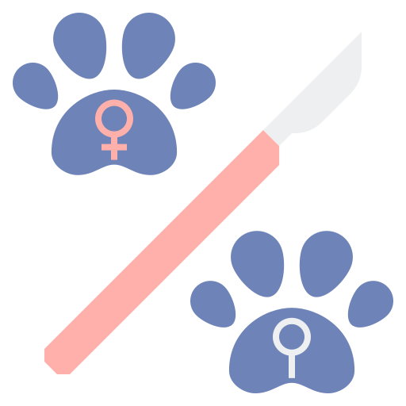
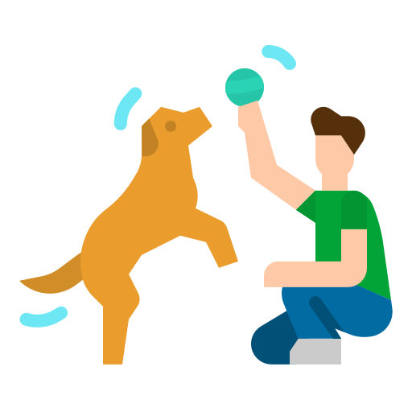

Here at Northland Animal Welfar Society (NAWS) we provide a Spay an Neuter service for dogs and Cats.Spaying and neutering are surgical procedures performed on animals, typically cats and dogs, to sterilize them.
Welcome to NAWS, where we pamper your furry companions with love and care. Our pet grooming service is more than just a trim; it's a rejuvenating spa experience for your beloved pets. From gentle baths to stylish haircuts, our experienced groomers ensure that every pet leaves looking and feeling their best. Using only high-quality products and techniques tailored to each pet's needs, we prioritize their comfort and safety above all else. At NAWS, we strive to build lasting relationships with both pets and their owners, providing top-notch grooming services with a personal touch.
Protect your furry family members with our reliable pet microchipping service at NAWS. Our advanced microchips provide a permanent identification solution, ensuring that your pet can always find their way back home, even if they wander off or get lost. With a quick and painless procedure, our experienced staff implant the tiny microchip beneath your pet's skin, encoding vital contact information. Rest easy knowing that your beloved companion is equipped with the best chance of being reunited with you in case of separation. Choose NAWS for peace of mind and safeguard your pet's future today.

Join our mission at NAWS to tackle pet overpopulation through our Trap-Neuter-Return (TNR) program. With compassion and dedication, we trap community cats, provide them with essential veterinary care, including spaying or neutering, and then return them to their outdoor homes. By controlling the feline population through humane methods, we prevent the cycle of unwanted litters and improve the welfare of these free-roaming cats. Our experienced team ensures each cat receives the care they deserve, promoting healthier communities for both cats and humans alike. Partner with NAWS to make a lasting impact on the lives of our furry friends and create a brighter future for all.
Discover a world of premium pet products at NAWS. From nutritious treats to durable toys and cozy beds, we offer a curated selection of items designed to enhance the lives of your beloved pets. Our commitment to quality means that every product we carry is carefully sourced and tested to meet the highest standards of safety and effectiveness. Whether you're looking to spoil your furry friend or meet their essential needs, NAWS is your one-stop destination for all things pet-related. Join our community of pet lovers and treat your companions to the best they deserve.

At NAWS, we believe in unlocking the full potential of every pet through our expert training programs. Whether you have a playful pup or a curious kitten, our certified trainers are here to help you build a strong bond and teach essential skills for a harmonious life together. Using positive reinforcement techniques and personalized approaches, we address behavioral challenges and foster good manners in your furry friends. From basic obedience to advanced tricks, our comprehensive classes cater to pets of all ages and abilities. Join PawPros today and embark on a rewarding journey of learning and growth with your beloved companions.